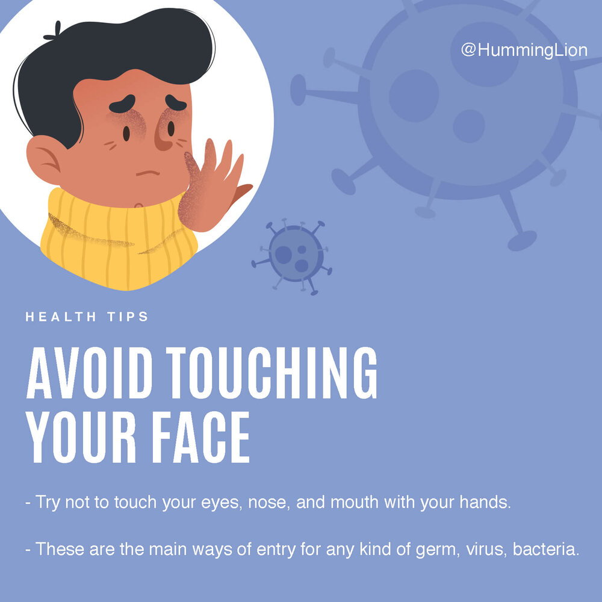

Precaution against CoronaVirus

Cough or sneeze into your elbow - coughing or sneezing into your elbow catches the droplets
and stops them getting onto your hands. That means you won't spread the virus to other
people and make them sick too. You can also cough or sneeze into tissues. Put any used
tissues in the bin or a bag immediately.Then wash your hands thoroughly. Then dry.
and stops them getting onto your hands. That means you won't spread the virus to other
people and make them sick too. You can also cough or sneeze into tissues. Put any used
tissues in the bin or a bag immediately.Then wash your hands thoroughly. Then dry.

Don't touch your eyes, nose or mouth if your hands are dirty. Hands touch many surfaces and can
pick up viruses. Hands can then transfer the virus to your eyes, nose or mouth. From there, the virus
can enter your body and can make you sick.
pick up viruses. Hands can then transfer the virus to your eyes, nose or mouth. From there, the virus
can enter your body and can make you sick.
Wash all surfaces of the hands - including backs of hands, between fingers and under nails - for at least
20 seconds with soap and water or use a sanitiser that contains at least 60 percent alcohol.
20 seconds with soap and water or use a sanitiser that contains at least 60 percent alcohol.
clean and disinfect frequently touched surfaces and objects, such as doorknobs. COVID-19 can remain
on plastic and stainless steel surfaces for up to about 3 days and less than that for other types of surfaces.
This will depend on the surface. If surfaces look dirty, clean them first. It 's best to use a disinfectant that is
antiviral - follow instructions. Remember to store cleaners and disinfectants safely.
on plastic and stainless steel surfaces for up to about 3 days and less than that for other types of surfaces.
This will depend on the surface. If surfaces look dirty, clean them first. It 's best to use a disinfectant that is
antiviral - follow instructions. Remember to store cleaners and disinfectants safely.

According to the World Health Organization (WHO), people will only need to wear a face mask if they are
coughing, sneezing, or taking care of someone with COVID-19. Face masks are only effective if a person
uses them correctly.
coughing, sneezing, or taking care of someone with COVID-19. Face masks are only effective if a person
uses them correctly.

People should take care to avoid coming into close contact with others — especially those who are older,
unwell, or have symptoms of the virus. The Centers for Disease Control and Prevention (CDC) recommend
staying 6 feet away from anyone who is coughing or sneezing. This is because when a person coughs or
sneezes, small droplets containing the virus leave their mouth and nose. Other people can then breathe these
droplets in and catch any virus that the droplets may contain.
unwell, or have symptoms of the virus. The Centers for Disease Control and Prevention (CDC) recommend
staying 6 feet away from anyone who is coughing or sneezing. This is because when a person coughs or
sneezes, small droplets containing the virus leave their mouth and nose. Other people can then breathe these
droplets in and catch any virus that the droplets may contain.
If a person has mild symptoms of COVID-19, they can self-isolate by staying at home and avoiding contact
with others. Even if a person is unsure whether they have COVID-19, a common cold, or something else, it is
best to stay inside and rest.
with others. Even if a person is unsure whether they have COVID-19, a common cold, or something else, it is
best to stay inside and rest.
Anyone with a fever, cough, or difficulty breathing in an area with a COVID-19 outbreak should seek medical
advice. Calling ahead before visiting a healthcare facility allows healthcare providers to reduce the risk of the
virus spreading to others.
advice. Calling ahead before visiting a healthcare facility allows healthcare providers to reduce the risk of the
virus spreading to others.
The CDC recommend that anyone at high risk of COVID-19 complications avoid cruise and air travel. People
at lower risk can assess the potential risks of traveling, then decide whether it is best to postpone or cancel their
travel plans. While the situation is constantly developing, many countries discourage nonessential travel and
some have closed their borders to certain groups.
at lower risk can assess the potential risks of traveling, then decide whether it is best to postpone or cancel their
travel plans. While the situation is constantly developing, many countries discourage nonessential travel and
some have closed their borders to certain groups.

Keep up to date on the latest information from trusted sources, such as WHO or your local and national health
authorities. Local and national authorities are best placed to advise on what people in your area should be
doing to protect themselves.
authorities. Local and national authorities are best placed to advise on what people in your area should be
doing to protect themselves.